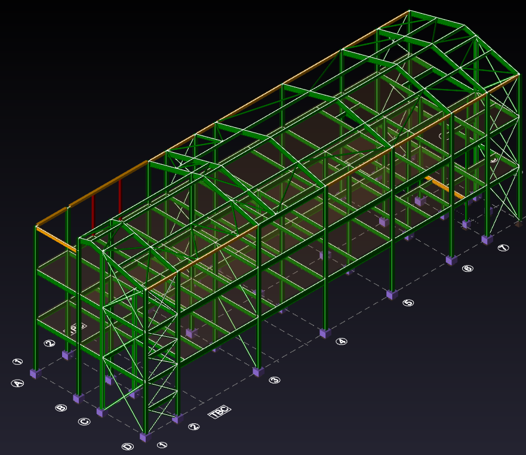

01 / Justice & Custodial
Three-Storey
Education Building
CONFIDENTIALClient & site withheld, operational secure estate
Engineering readoutTekla SD
36×10.5mBuilding footprint
3storeysSteel frame · composite slabs
A three-storey, 36 by 10.5 m steel-framed education and industries building inside a live prison, taken from conceptual design through detailed design and analysis across RIBA Stages 2, 3 and 4. I developed the steelwork design, foundation design and cladding, modelled the structure in Revit, and resolved a hybrid duo-pitch and flat roof, coordinating closely with the architects, MEP and geotechnical engineers.
SectorGovernment
StageRIBA 3 & 4
Year2024 / 25

Fig.01 / Tekla Structural Designer analysis model17 m · 3 storeys